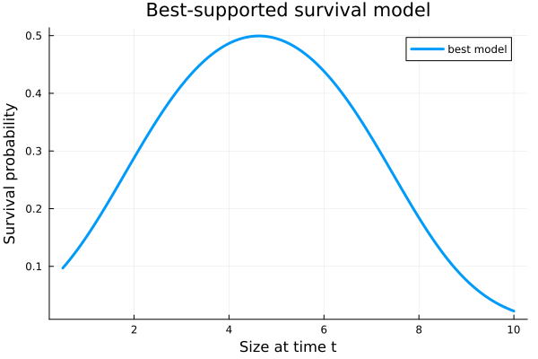

Model selection
VitalRateModels.ModelComparisonResult — Type
ModelComparisonResultResult of model comparison/selection.
Fields
models: Vector of fitted modelsformulas: Corresponding formulasaic_values: AIC for each modeldelta_aic: ΔAIC relative to best modelweights: Akaike weightsbest_idx: Index of the best model
VitalRateModels.best_model — Function
best_model(result::ModelComparisonResult)Return the best-fitting model from a comparison result.
VitalRateModels.modelsearch — Method
modelsearch(::Type{T}, data::DataFrame, formulas::AbstractVector{<:FormulaTerm};
distribution=nothing, criterion=:aic) where T<:AbstractVitalRateModelFit multiple candidate models and rank by information criterion.
Arguments
T: Model type (SurvivalModel, GrowthModel, etc.)data: DataFrame with demographic dataformulas: Vector of candidate formulas to comparedistribution: Distribution family (auto-selected if nothing)criterion::aicor:bic
Returns
A ModelComparisonResult with ranked models.
Example
formulas = [
@formula(survived ~ size_t),
@formula(survived ~ size_t + size_t^2),
@formula(survived ~ size_t + size_t^2 + size_t^3),
]
result = modelsearch(SurvivalModel, data, formulas)
best = best_model(result)VitalRateModels.modelsearch — Method
modelsearch(::Type{T}, data::DataFrame, response::Symbol, predictors::Vector{Symbol};
max_order::Int=2, distribution=nothing) where T<:AbstractVitalRateModelAutomated model search with polynomial terms up to max_order. Generates candidate formulas automatically from predictor combinations.
using VitalRateModels, DataFrames, StatsModels, Distributions, Plots
using Random
Random.seed!(2103)
n = 220
size_t = clamp.(rand(Normal(5.0, 1.4), n), 0.5, 10.0)
logit_survival = @. -2.7 + 0.9 * size_t - 0.08 * size_t^2
survived = rand.(Bernoulli.(1 ./(1 .+ exp.(-logit_survival)))) .== 1
demo = DataFrame(size_t=size_t, survived=survived)
formulas = [
@formula(survived ~ size_t),
@formula(survived ~ size_t + size_t^2),
]
comparison = modelsearch(SurvivalModel, demo, formulas)ModelComparisonResult{AbstractFittedVitalRate}(AbstractFittedVitalRate[FittedSurvival{StatsModels.TableRegressionModel{GLM.GeneralizedLinearModel{GLM.GlmResp{Vector{Float64}, Distributions.Bernoulli{Float64}, GLM.LogitLink}, GLM.DensePredChol{Float64, LinearAlgebra.CholeskyPivoted{Float64, Matrix{Float64}, Vector{Int64}}}}, Matrix{Float64}}}(StatsModels.TableRegressionModel{GLM.GeneralizedLinearModel{GLM.GlmResp{Vector{Float64}, Distributions.Bernoulli{Float64}, GLM.LogitLink}, GLM.DensePredChol{Float64, LinearAlgebra.CholeskyPivoted{Float64, Matrix{Float64}, Vector{Int64}}}}, Matrix{Float64}}(GLM.GeneralizedLinearModel{GLM.GlmResp{Vector{Float64}, Distributions.Bernoulli{Float64}, GLM.LogitLink}, GLM.DensePredChol{Float64, LinearAlgebra.CholeskyPivoted{Float64, Matrix{Float64}, Vector{Int64}}}}:
Coefficients:
────────────────────────────────────────────────────────────────
Coef. Std. Error z Pr(>|z|) Lower 95% Upper 95%
────────────────────────────────────────────────────────────────
x1 0.323192 0.520202 0.62 0.5344 -0.696386 1.34277
x2 -0.114699 0.0997083 -1.15 0.2500 -0.310124 0.0807251
────────────────────────────────────────────────────────────────
, ModelFrame{@NamedTuple{survived::BitVector, size_t::Vector{Float64}}, GLM.GeneralizedLinearModel}(survived ~ 1 + size_t, StatsModels.Schema with 2 entries:
size_t => size_t
survived => survived
, (survived = Bool[0, 1, 1, 1, 1, 0, 0, 0, 1, 0 … 0, 0, 1, 1, 1, 0, 1, 1, 1, 0], size_t = [6.309164797281988, 3.091260014141131, 4.752003127178717, 5.713913879390384, 4.155519212394385, 5.3043871935566, 6.099954625234077, 3.288961071842584, 3.7532283430096083, 7.163834675536568 … 4.882543035706821, 5.65053260420319, 6.300335426102112, 5.667510361932271, 7.4875672881244, 4.450422596245463, 6.413155199684385, 3.2585078376994407, 4.0111752321253515, 4.121479937907907]), GLM.GeneralizedLinearModel), ModelMatrix{Matrix{Float64}}([1.0 6.309164797281988; 1.0 3.091260014141131; … ; 1.0 4.0111752321253515; 1.0 4.121479937907907], [1, 2])), survived ~ size_t, Binomial_(), 304.0748190377162, 220), FittedSurvival{StatsModels.TableRegressionModel{GLM.GeneralizedLinearModel{GLM.GlmResp{Vector{Float64}, Distributions.Bernoulli{Float64}, GLM.LogitLink}, GLM.DensePredChol{Float64, LinearAlgebra.CholeskyPivoted{Float64, Matrix{Float64}, Vector{Int64}}}}, Matrix{Float64}}}(StatsModels.TableRegressionModel{GLM.GeneralizedLinearModel{GLM.GlmResp{Vector{Float64}, Distributions.Bernoulli{Float64}, GLM.LogitLink}, GLM.DensePredChol{Float64, LinearAlgebra.CholeskyPivoted{Float64, Matrix{Float64}, Vector{Int64}}}}, Matrix{Float64}}(GLM.GeneralizedLinearModel{GLM.GlmResp{Vector{Float64}, Distributions.Bernoulli{Float64}, GLM.LogitLink}, GLM.DensePredChol{Float64, LinearAlgebra.CholeskyPivoted{Float64, Matrix{Float64}, Vector{Int64}}}}:
Coefficients:
─────────────────────────────────────────────────────────────────
Coef. Std. Error z Pr(>|z|) Lower 95% Upper 95%
─────────────────────────────────────────────────────────────────
x1 -2.80218 1.54286 -1.82 0.0693 -5.82612 0.221765
x2 1.20972 0.622544 1.94 0.0520 -0.010445 2.42988
x3 -0.130671 0.0610608 -2.14 0.0324 -0.250347 -0.0109936
─────────────────────────────────────────────────────────────────
, ModelFrame{@NamedTuple{survived::BitVector, size_t::Vector{Float64}}, GLM.GeneralizedLinearModel}(survived ~ 1 + size_t + :(size_t ^ 2), StatsModels.Schema with 2 entries:
size_t => size_t
survived => survived
, (survived = Bool[0, 1, 1, 1, 1, 0, 0, 0, 1, 0 … 0, 0, 1, 1, 1, 0, 1, 1, 1, 0], size_t = [6.309164797281988, 3.091260014141131, 4.752003127178717, 5.713913879390384, 4.155519212394385, 5.3043871935566, 6.099954625234077, 3.288961071842584, 3.7532283430096083, 7.163834675536568 … 4.882543035706821, 5.65053260420319, 6.300335426102112, 5.667510361932271, 7.4875672881244, 4.450422596245463, 6.413155199684385, 3.2585078376994407, 4.0111752321253515, 4.121479937907907]), GLM.GeneralizedLinearModel), ModelMatrix{Matrix{Float64}}([1.0 6.309164797281988 39.805560439262266; 1.0 3.091260014141131 9.555888475027826; … ; 1.0 4.0111752321253515 16.089526742815867; 1.0 4.121479937907907 16.986596878577362], [1, 2, 3])), survived ~ size_t + :(size_t ^ 2), Binomial_(), 300.8000714753971, 220)], FormulaTerm[survived ~ size_t, survived ~ size_t + :(size_t ^ 2)], [304.0748190377162, 300.8000714753971], [3.274747562319135, 0.0], [0.162822729459199, 0.837177270540801], 2)DataFrame(
formula=string.(comparison.formulas),
aic=round.(comparison.aic_values, digits=2),
delta_aic=round.(comparison.delta_aic, digits=2),
weight=round.(comparison.weights, digits=3),
)2×4 DataFrame
| Row | formula | aic | delta_aic | weight |
|---|---|---|---|---|
| String | Float64 | Float64 | Float64 | |
| 1 | survived ~ size_t | 304.07 | 3.27 | 0.163 |
| 2 | survived ~ size_t + :(size_t ^ 2) | 300.8 | 0.0 | 0.837 |
best_fit = best_model(comparison)
size_grid = collect(range(0.5, 10.0; length=150))
p = plot(
size_grid,
predict_vital_rate(best_fit, size_grid),
linewidth=3,
xlabel="Size at time t",
ylabel="Survival probability",
title="Best-supported survival model",
label="best model",
)
p